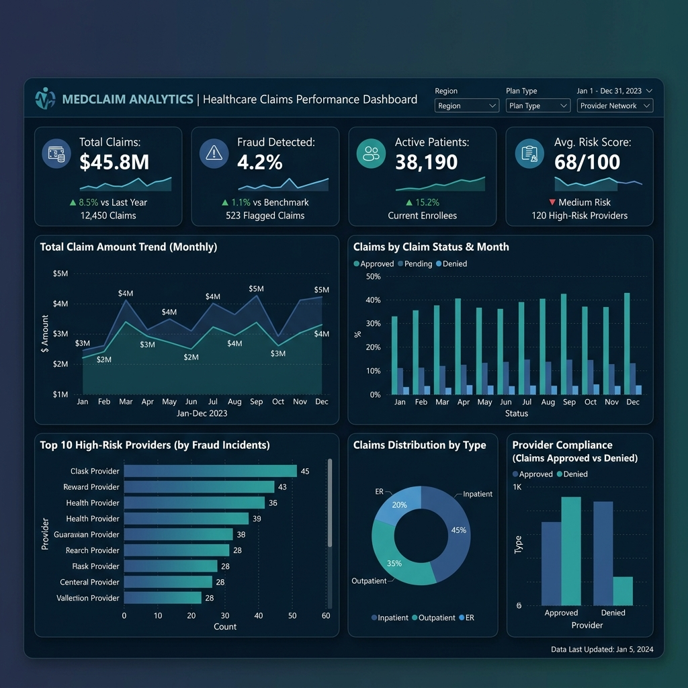
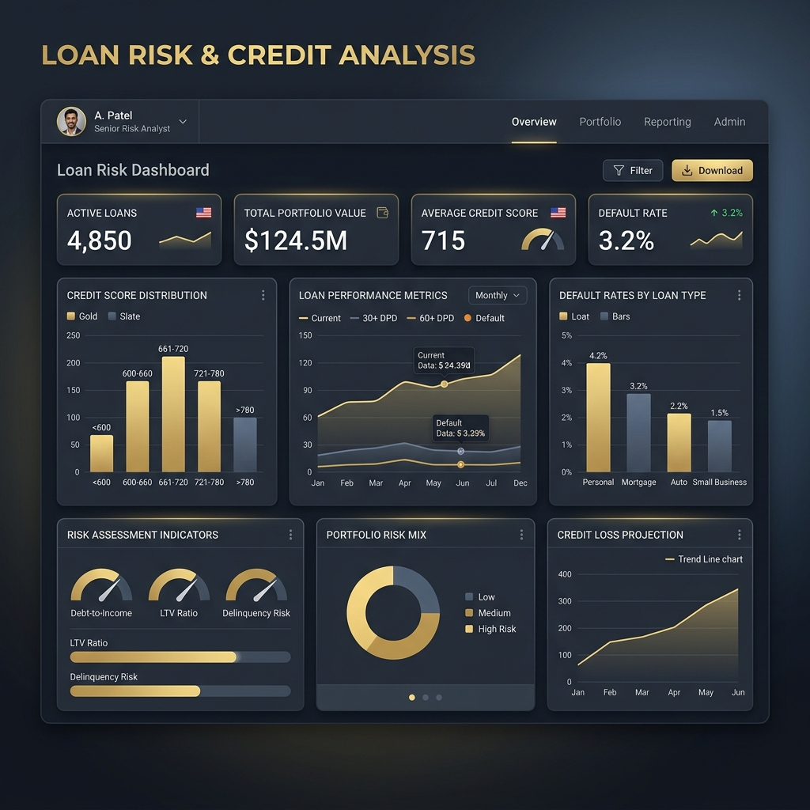
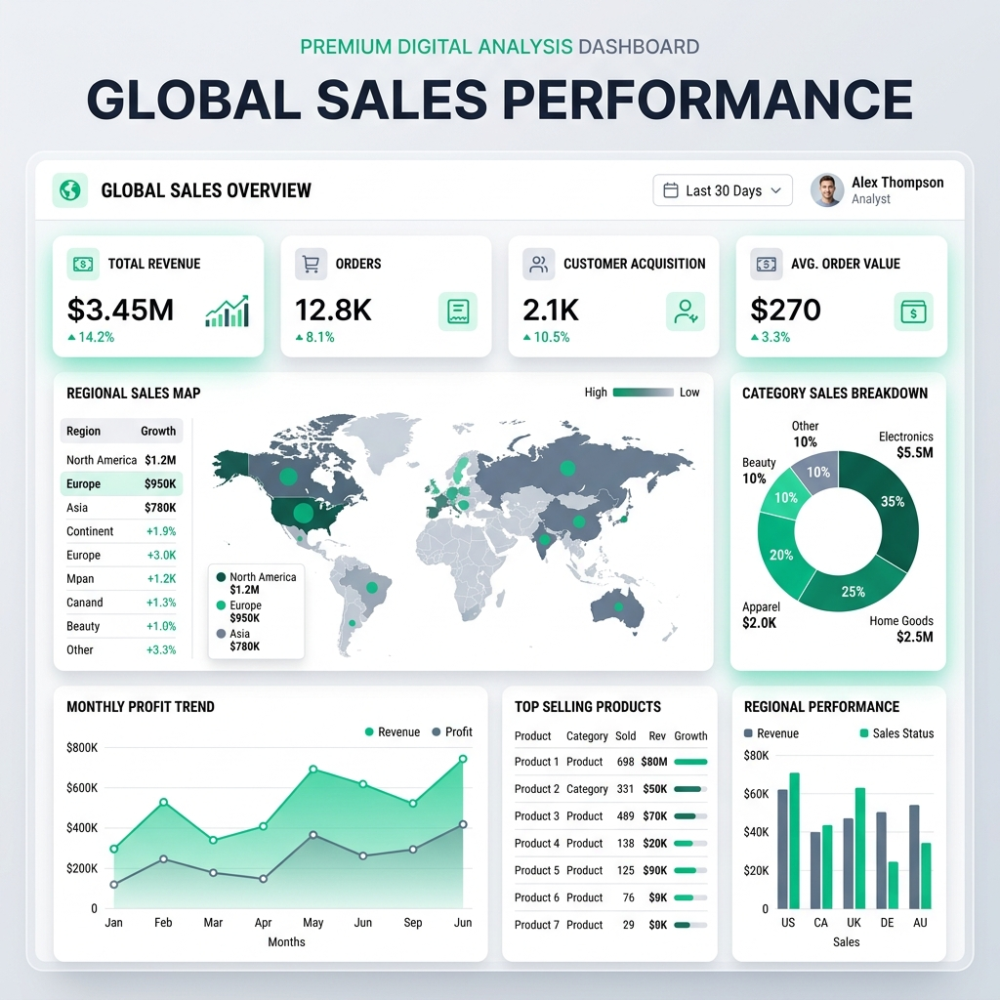
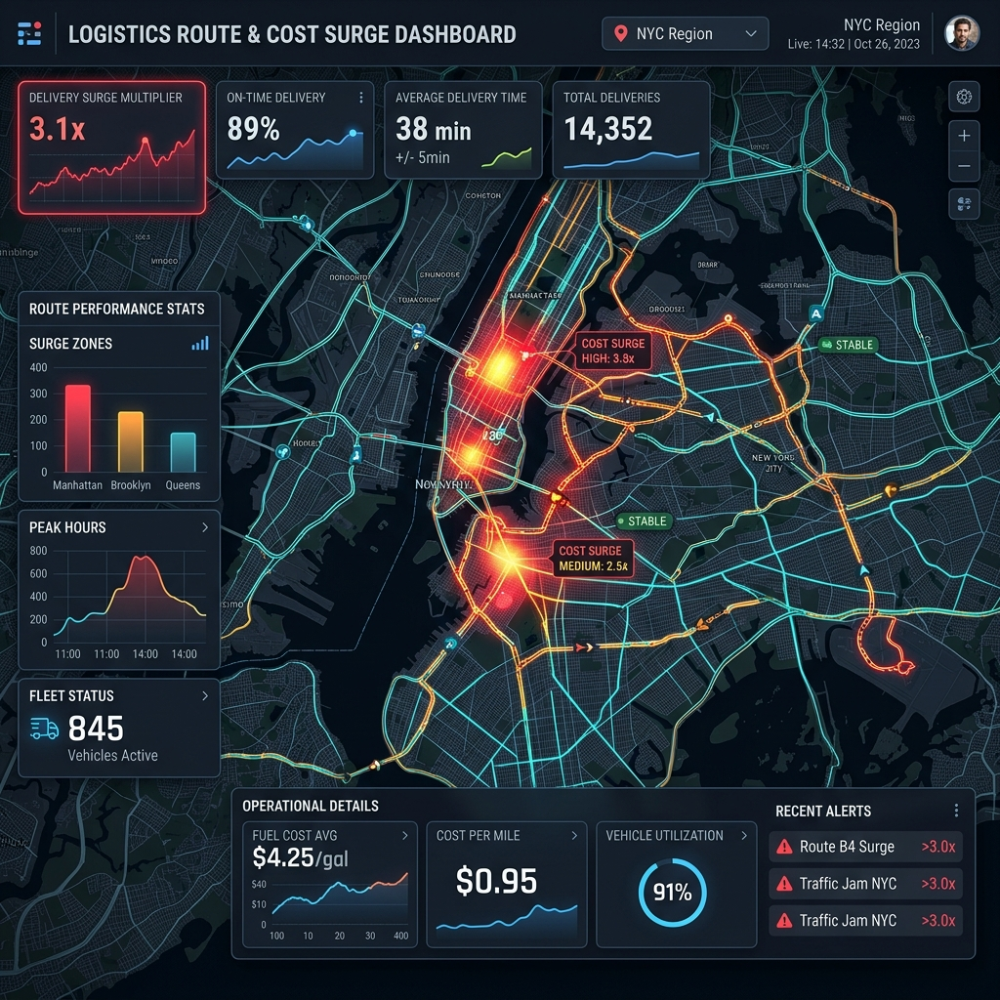
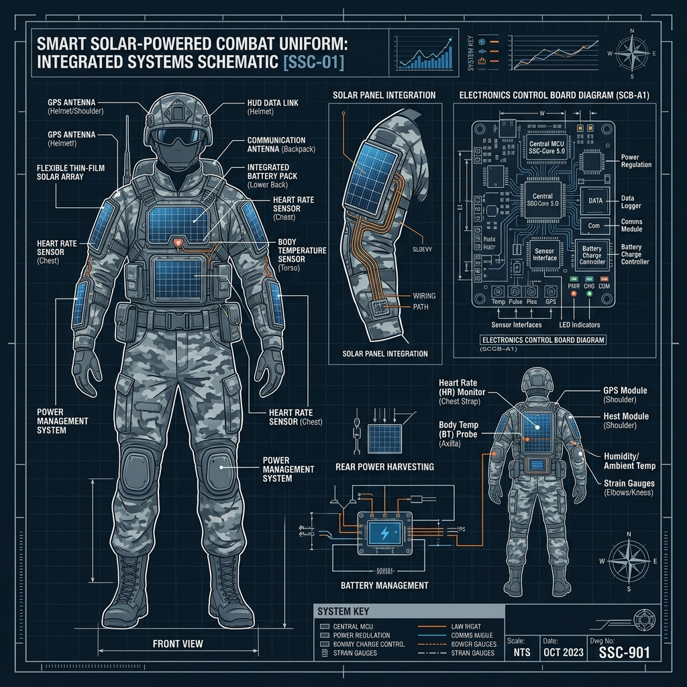
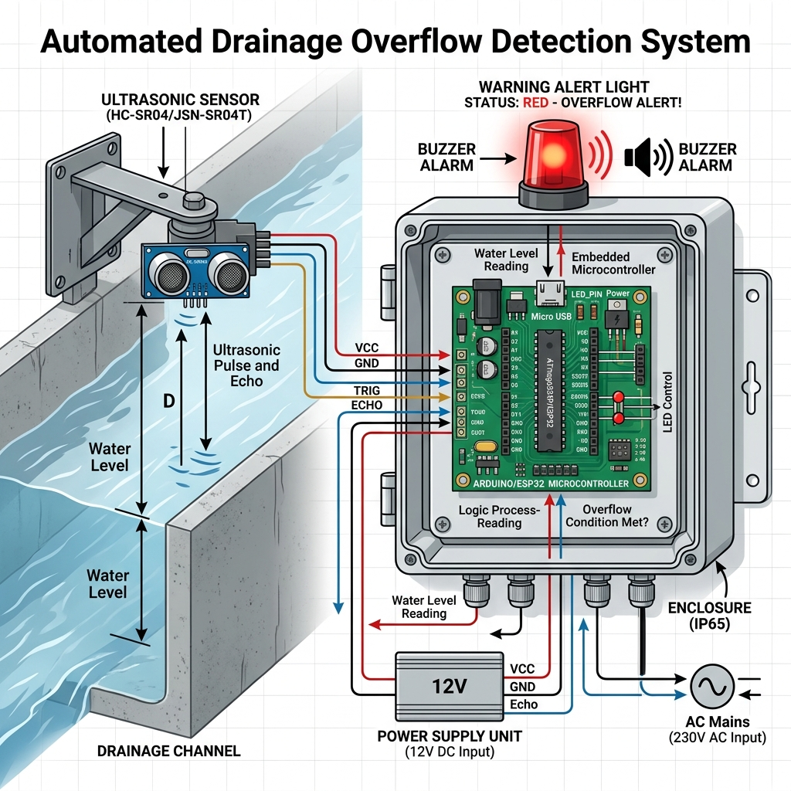

Hi, I'm Naveen K
Data Analyst & Power BI Developer with 6 months of experience in Power BI, SQL, Excel, and Python analytics. Passionate about transforming complex datasets into interactive dashboards and actionable business insights.
About Me
ECE Graduate specializing in Data Analytics & Power BI Development.
I am an Electronics and Communication Engineering (ECE) graduate with hands-on experience in Data Analytics, SQL querying, Power BI, Excel formulas, and Python data processing. During my 6-month experience and training at Besant Technologies, I gained deep practical exposure to dashboard development, data cleaning, ETL processes, and exploratory data analysis (EDA).
I enjoy solving complex data puzzles and translating raw data into interactive dashboards that support strategic business decisions. I have built a portfolio of analytical projects across Healthcare, Finance, Sales, and Logistics, as well as engineering and IoT-focused analytics.
By the Numbers
Key metrics that define my professional journey so far.
at Besant Tech
Projects
Analyzed
Dashboards Built
Certifications
Work Experience
Hands-on professional experience in data analytics and business intelligence.
My Technical Skills
Technologies and tools I use to build analytics, BI dashboards, and data-driven solutions.
My Projects
Click on a project to see more details.

Developed an end-to-end interactive Power BI dashboard analyzing 20,100+ healthcare insurance claims to monitor claim performance, patient demographics, provider efficiency, and fraud trends.

An interactive dashboard focusing on loan performance, customer demographics, and credit risk assessment. Evaluates default rates, loan approval rates, and maps default patterns to improve lending strategies and risk mitigation.

Developed an interactive, multi-page Sales Analysis Dashboard in Power BI to monitor end-to-end business performance across sales revenue, profit margins, regional trends, and product category performance.

Designed and developed a normalized relational database with 6 interconnected tables to analyze the impact of fuel price fluctuations on last-mile delivery operations — a real-world supply chain analytics use case.

An engineering hardware project designing an electronic military uniform powered by flexible solar panels. Integrates sensors to track soldier physiological metrics (body temperature, heart rate) and location coordinates for tactical monitoring and soldier safety.

An IoT-based smart city prototype system using ultrasonic level sensors and microcontroller modules to monitor drainage levels. Triggers automated warning alerts to municipal servers before sewage overflows occur, facilitating proactive maintenance.
No projects available for this filter.
Professional Certifications
Verified credentials in data analytics, Business Intelligence, and programming.
My Education
B.E. Electronics and Communication Engineering (ECE) graduate.
Get in touch
Have a project or job opportunity? Feel free to reach out. I'd love to hear from you.
Ready for Data Analyst & Power BI Roles
Open to full-time opportunities in Data Analytics, Business Intelligence, Power BI Development, and Reporting Analytics. Let's build something impactful together!
Send a Message